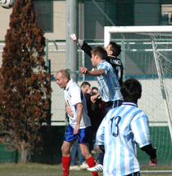
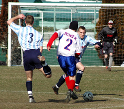

|
YC&AC, Sun 14th Jan. A spirited and skillfull effort from the French belied their ordinary start to the season as they gave as good as they got, in the 1st half at least, at a sun drenched YCAC on sunday. The speed and movement of their forwards caused a few flutters in the heart of the YCAC defence and Gary the Goalie rode his luck at times.
France eventually managed to score the 1st goal Gary has conceded in the last 5 1/2 League games. Unfortunately for them the home team was 3 goals up by then and finally ran out 4-1 winners.
YCAC were somewhat grateful to turn round at 0-0 although were beginning to get the upper hand in the last 10 minutes of the half. Tim Miller settled the nerves immediately after the interval with a thumping header from Phil Denhams corner. 1-0 to the YCAC and those on the sideline began the usual nailbiting wait to see if their heroes could hold out or even grab a 2nd near the end. Astoundingly a scrambled effort from James Absolom followed by a debut goal for Matthew Wallace put YCAC in completely unchartered territory. 3 goals to the good for the 1st time in TML 4.
I cant remember which but 1 of those goals was laid on by a beautiful cross from Nick McDonald, a really top bloke and great left back. Nick runs Instinet whose sponsorship of YCAC1 is up soon. Instinet is a global agency broker founded in 1969, and a damn fine one. One of the best, if not the best one founded that year. Nick McDonald; what a guy.
After the French riposte, Neil Shonhard, also making his debut, added a 4th with a cheeky lob. 4 goals! YCAC hasnt scored 4 against Div1 opposition since, er, the last time France were the opponents at the arse end of last season. A warning for the Hibs and the rest of the pack chasing them or YCAC using up its goal quota for the next 3 games? We shall see next sunday when the Swiss are in town.
Report by Steve Taw
|